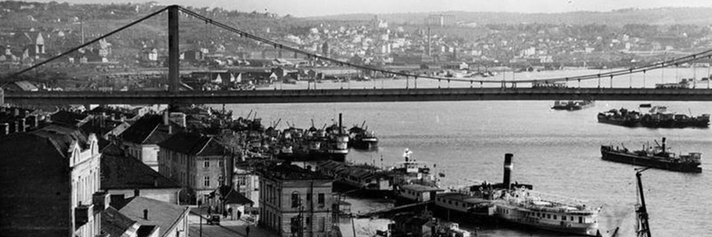
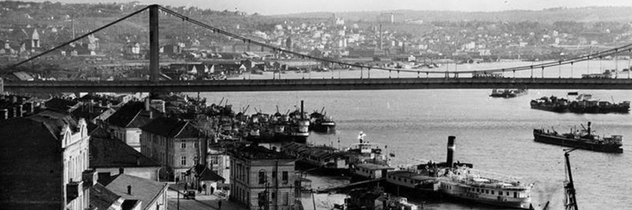

Заборављени
Београд
Народно позориште
По оснивању Народног позоришта, Кнез Михало Обреновић и Државни савет одређују локацију за позоришну зграду, бивши турски плац код Стамбол-капије. Нажалост, он није дочекао почетак радова, јер је убијен 3. јуна 1868. године, па је камен темељац поставио кнез Милан Обреновић. Пројектант позоришне зграде код Стамбол-капије био архитекта Александар Бугарски.
Земљани радови су почели 29. маја 1868. године. Зграда је стављена под кров већ јануара 1869. Прве преправке изведена су већ 1870. године. Релативно мала позорница захтевала је дограђивање и продужење. Потреба за додатним проширењем зграде, 1911. године донета је одлукао о још једној реконструкцији зграде. Планови су предвиђали промену спољашњег и унутрашњег изгледа Народном позоришту. У лето 1912. већ се почело са проширивањем позорнице, а због избијања ратова, Балканског рата и Првог сцветског рата, градња Позоришта је настављена тек 1919. године, и уз мање или веће измене у односу на пројекат из 1911, радови су потпуно завршени тек 1922. године. Спољна архитектура је изгубила јединство стила и склад, представљала је мешавину сецесије и барока. Гледалиште сада бројало 700 седишта, 33 ложе (плус нешто већа дворска) и 66 стајања – све укупно 944 места. Позорница је повећана у дубину, а уграђена је и покретна округла бина.
Позориште је страдало у бомбардовању Београда 6. априла 1941. Већ крајем године, иако под окупаторским властима, Министарство грађевина започиње поправку. Некад симетрична, монументална композиција грађевине из 1922. године потпуно је изгубила свој склад у сада скоро удвострученој дужини. Штедљива реконструкција је утицала и на спољну архитектуру старог дела зграде. Гледалиште је добило релативно скроман изглед с упрошћеним декором и таваницом без слика.
Народно позориште и град Београд су 1986. године одлучили да се започне још једна, заиста неопходна, детаљна реконструкција сада већ сасвим неусловне зграде. Обнова је трајала скоро три године и стајала је око 4,5 милиона долара.
Овом реконструкцијом, старој згради је враћен изглед од пре Другог светског рата. У г ледалиште су враћене ложе, које су уклоњене 1966. и сада изгледају као и у XIX веку. Дворана је добила нов сјај и привлачност. Цела је пресвучена у црвени велур и плиш, а још преовлађују основни бели и златни тонови. Постављени су мермерни подови, гипсани украси на плафонима, рељефи, позлата, кристални лустери и давно заборављена, биста кнеза Михаила, оснивача позоришта. У новој, тзв. радној згради, архитекти и градитељи су оставили везе за подземне ходнике, који би једнога дана могли да се повежу са новом зградом за Оперу и Балет, која би била изграђена на Тргу републике, преко пута Народног позоришта.

{kind=link}
{kind=link}